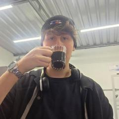
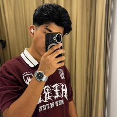

Renato Dagnolo Rodrigues RM: 574993 Turma: 1TDSPA-26 GitHub de Renato Dagnolo Rodrigues (abre em nova aba) LinkedIn de Renato Dagnolo Rodrigues (abre em nova aba)
 Lucas Gabriel Scomparin RM: 575112 Turma: 1TDSPA-26 GitHub de Lucas Gabriel Scomparin (abre em nova aba) LinkedIn de Lucas Gabriel Scomparin (abre em nova aba)
Ryan Jeimysson Matos de Jesus RM: 575552 Turma: 1TDSPA-26 GitHub de Ryan Jeimysson Matos de Jesus (abre em nova aba) LinkedIn de Ryan Jeimysson Matos de Jesus (abre em nova aba)
Laura de Lucena Ferres RM: 576007 Turma: 1TDSPA-26 GitHub de Laura de Lucena Ferres (abre em nova aba) LinkedIn de Laura de Lucena Ferres (abre em nova aba)
 Diego Amador Limachi Aguilar RM: 574630 Turma: 1TDSPA-26 GitHub de Diego Amador Limachi Aguilar (abre em nova aba) LinkedIn de Diego Amador Limachi Aguilar (abre em nova aba)